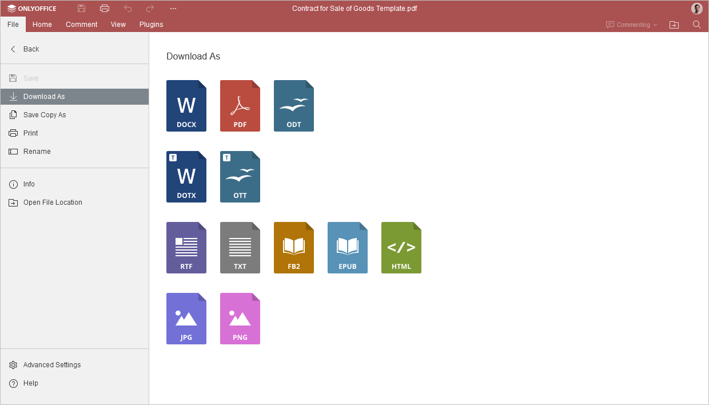
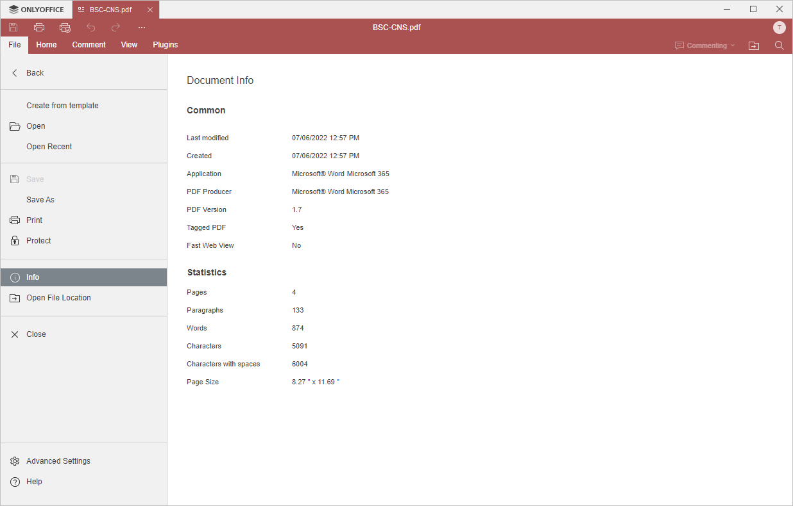

Kartica Fajl
Kartica Fajl u PDF Uređivaču omogućava izvođenje osnovnih operacija sa fajlovima.
Odgovarajući prozor u Online PDF Uređivaču:

Odgovarajući prozor u Desktop PDF Uređivaču:

Pomoću ove kartice možete:
- u online verziji sačuvati trenutni fajl, preuzeti kao (sačuvati dokument u odabranom formatu na hard disk računara), sačuvati kopiju kao (sačuvati kopiju dokumenta u odabranom formatu u portalu dokumenata), štampati fajl ili preimenovati ga, u desktop verziji sačuvati fajl bez promene formata i lokacije koristeći opciju Sačuvaj, ili sačuvati fajl promenom imena, lokacije ili formata koristeći opciju Sačuvaj kao, štampati fajl.
- otvoriti nedavno uređivani fajl,
- prikazati opšte informacije o PDF dokumentu,
- pristupiti Naprednim podešavanjima uređivača.
- u desktop verziji otvoriti folder u kome je fajl smešten u prozoru File Explorer. U online verziji otvoriti folder modula Dokumenti gde je fajl smešten u novom tabu pregledača.